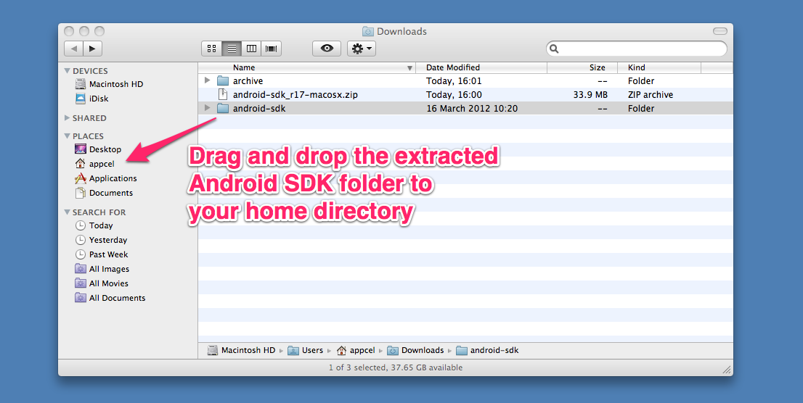
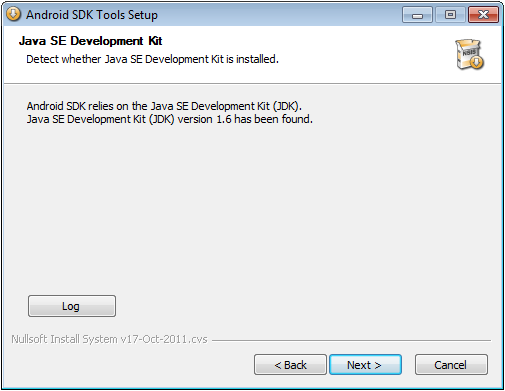

Installing the Android SDK
Overview
This guide describes where to obtain and how to install the Google Android SDK and associated packages.
Compatibility and download
Titanium requires the Android SDK Tools to be installed in order to allow you to develop Android applications.

The Android SDK can be downloaded using Appcelerator studio or Android studio which can be obtained from here: Official Website.
Required Android packages
The following packages, and the respective versions shown, must be installed to be able to develop for Android:
|
Package |
Minimum Version |
|
Android SDK Tools |
Rev 23 |
|
Android SDK Platform-tools/Build-tools |
Rev 23 |
|
Android SDK |
You need to have at least one Android SDK installed within the supported minimum and maximum target versions. For Android modules, you need to install Android SDK 6.0.x (API 23) and SDK 6.0.0+. |
Android SDK / Target Android platform
Each Titanium SDK supports building against a specific range of Android versions, as shown in the following table, and requires at least one of these versions to be installed. If you specify a android:targetSDKVersion in the tiapp.xml file of your project, you must specify one within the target min and max values. The minimum Android/SDK version column indicates the minimum version of Android that a device can run, which a Titanium application supports.
|
Titanium SDK Version |
Min Target Android/SDK Version |
Max Target Android/SDK Version |
Minimum Android/SDK Version |
|
7.3.0 |
6.0.x (API 23) |
8.1.x (API 27) |
4.1.x (API 16) |
|
7.0.0 - 7.2.0 |
6.0.x (API 23) |
8.0.x (API 26) |
4.1.x (API 16) |
|
6.2.0 - 6.3.0 |
7.1.x (API 25) |
8.0.x (API 26) |
4.1.x (API 16) |
|
6.0.0 - 6.1.x |
6.0.x (API 23) |
6.0.x (API 23) |
4.1.x (API 16) |
|
5.1.0 - 5.5.x |
6.0.x (API 23) |
6.0.x (API 23) |
4.0.x (API 14) |
|
5.0.0 - 5.0.x |
5.0.x (API 21) |
6.0.x (API 23) |
4.0.x (API 14) |
|
4.0.0 - 4.1.x |
5.0.x (API 21) |
5.1.x (API 22) |
4.0.x (API 14) |
|
3.4.1 - 3.5.1 |
4.0.x (API 14)* |
5.0.x (API 21)** |
2.3.x (API 10) |
|
3.3.0 - 3.4.0 |
4.0.x (API 14)* |
4.4.x (API 19) |
2.3.x (API 10) |
|
3.2.0 - 3.2.3 |
2.3.x (API 10)* |
4.4.x (API 19) |
2.3.x (API 10) |
|
3.1.2 - 3.1.3 |
2.3.x (API 10) |
4.3.x (API 18) |
2.3.x (API 10) |
|
3.1.1 |
2.3.x (API 10) |
4.2.x (API 17) |
2.3.x (API 10) |
|
3.1.0 |
2.2 (API 8) |
4.2.x (API 17) |
2.2 (API 8) |
|
2.1.2 - 3.0.2 |
2.2 (API 8) |
4.1.x (API 16) |
2.2 (API 8) |
|
2.0 - 2.1.1 |
2.2 (API 8) |
4.0.x (API 15) |
2.2 (API 8) |
|
1.8.x |
2.2 (API 8) |
3.x.x (API 11) |
2.2 (API 8) |
|
1.7.x |
2.1 (API 7) |
3.x.x (API 11) |
2.1 (API 7) |
Most mobile device manufacturers have been licensed to use Google's enhanced API, which provides support for Maps and other functionality. If this is the case for your target devices, you will need to install the relevant Google packages, listed as Google APIs by Google Inc., Android API x... by the Android SDK Manager tool. In Studio, choose the SDKs with the naming format "Google APIs x.x" to use the enhanced APIs, or those without the "Google APIs" prefix otherwise.
Android SDK packages can be installed using Appcelerator Studio of the Android SDK Manager tool inside Android Studio. See Installing the Android SDK for detailed instructions.
Android native add-on module development on macOS
The Xcode command line tools are required to develop native Android add-on modules on macOS.
See Installing the iOS SDK: Installing Command Line Tools for detailed instructions.
Installation
macOS
Note that the typical filesystem location of this software can be found in the macOS Software Locations section of these guides.
Installing Android SDK Tools on macOS
Once you have downloaded the Android SDK Tools archive, double-click to extract it.
-
rename the extracted folder to android-sdk, if you wish to keep it in accordance with the Software Locations section above
-
drag and drop the folder into the your home directory, to complete the installation

Windows
Note that the typical filesystem location of this software can be found in the Windows Software Locations section of these guides.
Installing Android SDK Tools on Windows
Once you have downloaded the Android SDK Tools Installer, double-click to run it.
-
proceed to the Java SE Development Kit stage and verify that Java SE Development Kit (JDK) version 1.6 has been found

-
at the Choose Install Location step, verify that the Destination Folder is the same as your Android SDK HOME folder, and correct if not. This path will be required when configuring Studio
-
ensure that there is sufficient space for the installation

-
complete the installation
Refer to the Windows Software Locations section, and add the path of the Android SDK Tools directory to your system's PATH.
Then proceed to the Installing Android Packages with Android SDK Manager section.
Installing Android packages with Android SDK Manager
The Android SDK Tools package that has been installed contains the Android SDK Manager that is used to install the rest of the Android SDK packages.
Launching the Android SDK Manager differs depending on the platform.
-
on macOS, launch its executable directly, at ~/android-sdk/tools/android
-
on Windows, login under your usual user account, right-click the SDK Manager from the Windows Start Menu and select Run as administrator. Enter the Administrator password, if you are prompted for it
In the Android SDK Manager, you will see different versions of the following items listed:
-
Android SDK Tools (mandatory) - includes the Android SDK Manager and Android Virtual Device Manager (android executable)
-
Android SDK Platform Tools (mandatory) - includes Android Debug Bridge, (adb executable)
-
SDK Platform - provides the libraries for building for a specific version of the Android OS that uses the standard Google APIs.
-
Google APIs by Google Inc - provides the libraries for building for a specific version of Android that uses the enhanced Google APIs (includes maps support).
-
System Image - For Android API versions 14 and above, the emulator system images are packaged separately from the SDK Platform package. Three versions of the system images are provided – ARM, Intel x86, and MIPS. The ARM system image is supplied by default in earlier SDK Platform packages, and corresponds to the hardware in most phones.
Set the filter options at the bottom and select the required packages for installation.
-
Click Install x packages button.
-
Select Accept All and click Install.
-
When the download completes, click Yes to restart adb and complete the installation.
Refer to the Titanium Compatibility Matrix for the latest list of required packages.
Installing x86 emulator packages
Some versions of the Android API are available with Intel x86 emulators. Look for the "Intel x86 Atom System Image" in the Android SDK Manager.
The x86 emulator may run faster than the standard ARM emulator, but may show minor differences with the ARM emulator. Extra software is required to take advantage of the x86 emulator – see Configuring Virtual Machine Acceleration in the Android Tools documentation.
Updating Android packages
Every time you update your Android packages, you will need to delete any AVDs that have been replaced by new revisions, otherwise they won’t be used. To do this, use the Android SDK Manager Tools > Manage AVDs menu item to launch the Android Virtual Device Manager.

Unless you have modified any AVD’s hardware configuration, it’s easier to simply clear all existing AVDs altogether. Thus, select each one in turn and click the delete button to do this.

Configuring Studio
To use the Android SDK with Studio, the path to the SDK must be set in the Preferences dialog.
-
Open the Preferences dialog:
-
On macOS, from the menu bar, select Appcelerator Studio > Preferences.
-
On Windows, from the menu bar, select Window > Preferences.
-
-
In the Preferences dialog, navigate to Studio > Platforms > Android SDK.
-
Set your Android SDK path. Enter the path to your Android SDK in the Android SDK Home textbox or click the Configure button to navigate to the SDK directory.
-
Select your default Android SDK. Select a Google APIs item from the Default Android SDK drop-down menu.
Configuring the CLI
To use the Android SDK with the Titanium CLI, the path to the SDK must be set in the Titanium CLI configuration settings. Run the following command and replace /Users/appc/sdk/android-sdk/ with the path to your Android SDK:
appc ti config android.sdk /Users/appc/sdk/android-sdk/